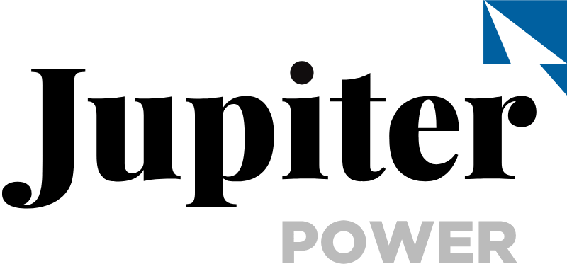
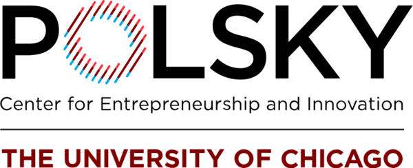

Sponsors
CES is proud to partner with organizations leading the energy transition — from investment banks and utilities to campus centers driving entrepreneurship and research.
Gold Sponsors

Jupiter Power
Jupiter Power is a leading developer and operator of utility-scale battery energy storage systems across the United States. Jupiter Power helps build a cleaner, more reliable energy future by bringing advanced energy storage to the grid, making sure power is available when and where people need it most. Founded in 2017, Jupiter Power was created with one goal in mind: to solve one of the most pressing challenges on the power grid as it faces historic changes. Since then, Jupiter Power has grown into one of the largest BESS developers and owner/operators in the country, with 19,700 MWh already operating and 110,000 MWh under development.

Polsky Center
The Polsky Center at the University of Chicago empowers entrepreneurs by providing access to mentorship, capital, and world-class resources to turn bold ideas into impactful ventures. The center's programs span venture creation, startup support, and industry partnerships, helping founders grow businesses across several sectors. The Polsky Energy Transition Leadership Program was established to accelerate Chicago Booth's offerings related to energy transition, renewable energy infrastructure, and entrepreneurial leadership. With a deep commitment to fostering inclusive innovation and economic growth, the center plays a central role in strengthening entrepreneurial ecosystems both locally and globally.
Silver Sponsors
Institute for Climate and Sustainable Growth
The Institute for Climate and Sustainable Growth leverages the University's unique legacy and resources to balance the risks of a changing climate with the essential need for human progress. It does so by combining frontier research in economics and policy, climate systems engineering, and energy technologies with a pioneering approach to energy and climate education. The Institute also seeds interdisciplinary research that explores new topics in this ever-evolving field and deploys practical, effective solutions in countries central to this challenge.